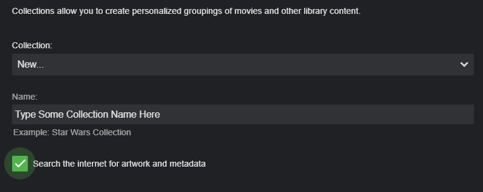

Collections
Collections are the grouping of like media such as:
Back to the Future Collection
- Back to the Future
- Back to the Future II
- Back to the Future III
The Terminator Collection
- The Terminator
- Terminator 2: Judgment Day
- Terminator 3: Rise of the Machines
- Terminator Salvation
- Terminator Genisys
Automatic Creation of Collections Collections for Movies can be created automatically by Emby Server by by configuring each movie library on your system.
There are only two options that need to be set. The first option is to either import collection information or not.
The second option is the required number of movies your system must have to be considered a Collections.
How to Create a Collection Manually
To create a collection manually, start with a Movie, Series, or any other item in your Emby library. Open the context menu for that item using one of the following methods:
- Right click on the poster
- Use the 3-Dot menu on the detail screen
- Mouse over the poster and use the 3-Dot menu

When the context menu appears, select "Add to Collection". You'll then be presented with a popup where you can add the item to an existing collection, or create a new one.

The easiest way to automatically download image art and meta-data is to use the same name as the collection found on TheMovieDb.Org.
You can check the name on TheMovieDb.Org by doing a “collection” search on their site like "Star Wars Collection". In this case it would return 4 collections you can match against:
Star Wars Collection Lego Star Wars Collection Robot Chicken: Star Wars Collection Star Wars: The Ewok Adventures Collection Just choose the proper collection name from the returned results.
As mentioned you can add several movies at a time to a collection and also use collection names that aren’t on TheMovieDb.Org. Here is an example of a collection useful for grouping movies to a particular artist such as Charlie Chaplin.
First we long press on the first poster we wish to add until we get this

Next we click the top left box to select additional movies and then we click the 3 dot menu top right.

We fill in the proper information and click OK to create a new collection.

We now have a collection added for Charlie Chaplin without poster art or meta-data.
Next, we can add our own information by editing the collection. First we can edit the text that shows up for the collection. We do this by clicking the 3 dot menu and choosing “Edit metadata” from the popup menu. We then scroll down and fill in our description in the “Overview” field and then we click Save.

We manually add cover art doing a similar process. We click the 3 dot menu and select “Edit images" from the popup menu.

We now click the PLUS sign above to arrive at this screen
From here you have a couple of choices. You can drag and drop an image into the dashed box or you can click the Browse button to navigate to a local image on your computer. Besides navigating and selecting local files there is a neat trick you can use to automatically download internet artwork.
If you open a new tab in your browser you can do a Google Image search for Charlie Chaplin. Once you find an image that interests you right click the artwork and click the “Copy image address” option.
Now that we are back to our Emby tab we click the Browse button which will open a dialog box (on Windows). We then RIGHT CLICK the file name field to paste the location we just copied from the Internet previously into this field.
After pasting in the link click the Windows Open button and Emby will import the image.

We can now see the image has been imported into the Emby dialog and we are ready to upload it by clicking the Upload button. It will now be added to the server.

We could add additional images if needed but since we only require one image for our needs we will click the left arrow at the top of the dialog.

We now have a completed manual collection that we have edited. As you can see in the picture and from the edit metadata menu there is additional information you can edit such as ratings, year, genres and other information.
Removing Items from a Collection
To remove an item from a collection, first browse to the detail screen for that collection. Each item in the collection will have a 3-dot menu.
To remove an item, click the 3-dot menu, then select "Remove from Collection".